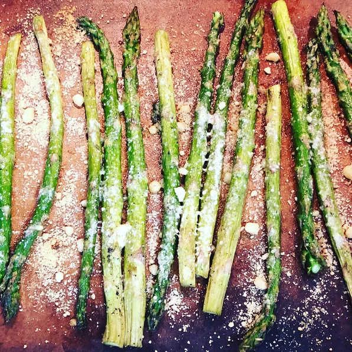

Oven-Cooked Asparagus

Salty and savory asparagus. Try with lamb or grilled fish.
Description
Oven-roasted asparagus is an easy to prepare dish that can go as a side to almost any entree, or as a meal by itself. Simple enough
for the kids to help or even make by themselves, this mouth-watering recipe can bring everyone together at the dinner table.
Ingredients
- 1 bunch asparagus spears, trimmed
- 3 tablespoons olive oil
- 1 1/2 tablespoons grated parmesean cheese
- 1 clove garlic, minced
- 1 teaspoon sea salt
- 1/2 teaspoon ground black pepper
- 1 tablespoon lemon juice
Steps
- Preheat oven to 425 degrees F (220 degrees C).
- Place the asparagus into a mixing bowl, and drizzle with the olive oil. Toss to coat the spears, then sprinkle with Parmesan cheese, garlic, salt, and pepper. Arrange the asparagus onto a baking sheet in a single layer.
- Bake in the preheated oven until just tender, 12 to 15 minutes depending on thickness. Sprinkle with lemon juice just before serving.